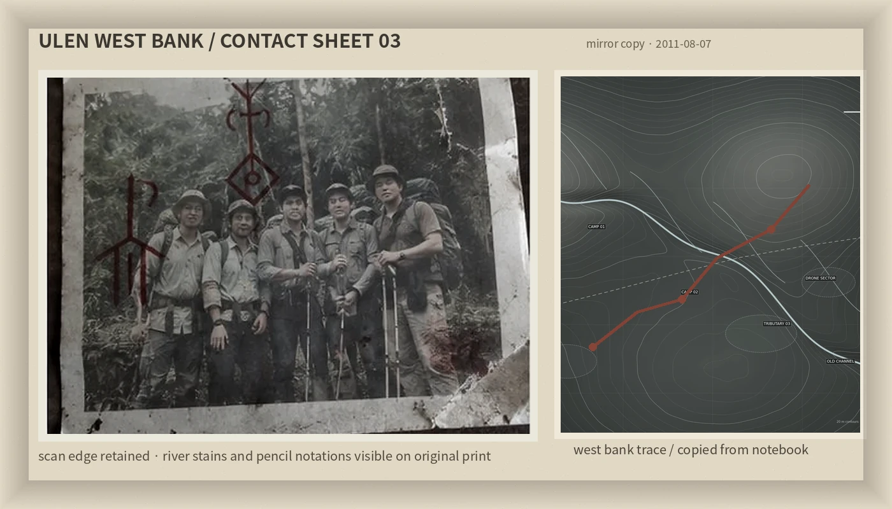

The Line Beyond / 林线之外
Last update 2011.08.07
Home
Game
Fragments
Guestbook

scan_ulen_westbank_03.jpg · mirror copy
一个关于走不出去的路。
我把几次乌伦上游的旧路线做成了一个很小的网页游戏。地图不是比例图，不要拿它当导航。
如果你只是来看照片，去Fragments。留言簿还有几条当年朋友留下的废话。